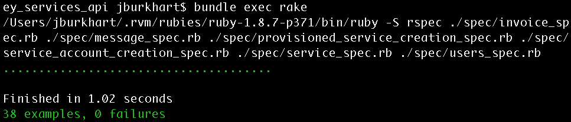
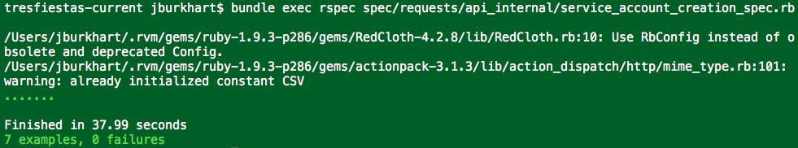
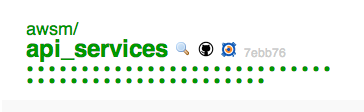
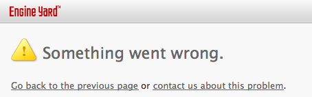

Engine Yard
This is where I work. Thank you to them for sponsoring this conference and sending me here. And this is what this talk is about. Because at Engine Yard we have a fairly large and complicated product...
| z, ? | toggle help (this) |
| space, → | next slide |
| shift-space, ← | previous slide |
| d | toggle debug mode |
| ## <ret> | go to slide # |
| c, t | table of contents (vi) |
| f | toggle footer |
| r | reload slides |
| n | toggle notes |
| p | run preshow |
| P | toggle pause |
Hi there. This is me. I'm Jacob Burkhart. You can tweet at me there or download this presentation.
This talk my story of building and living with a distributed architecture. This is the first time I've given a talk in Israel. It's also the first time I've given a technical talk. Last time I gave a talk at a ruby conference I talked about Surfing. This talk is going to be very different, but there's one key point that remains the same. This is a story of my experiences and what has worked for me. I'm not here to give you instructions on what to do. I only hope to inspire you. Maybe you'll face some problems similar to the ones I'm going to describe. Hopefully sharing my experience will help you to solve them better than I did.
This is where I work. Thank you to them for sponsoring this conference and sending me here. And this is what this talk is about. Because at Engine Yard we have a fairly large and complicated product...
this is EY Addons
But, documentation has a price (just like code) the more you write, the more you need to maintain
and it consists of a lot of services. We DO have the monolithic app syndrome. (that's our cloud dashboard in the middle). But we've been gradually been adding new features. And whenever we do we look for ways they can be added as separate services. By the way, I colored those 3 boxes because those are the services that I'm going to talk about today.
Why build this as a distributed system? We could just add everything into the main rails app: Cloud Dashboard.
This is the "DRY" principle. It applies to our systems, And it applies to our data model. We can extend "knowledge" to "data". One piece of data should have 1 authority.
this is a simple example of the data model for addons. DRY means understanding the data model and which system is responsible for what role and what piece of data.
Your data is distributed across systems. You'll need APIs to fetch/provide remote data when/where you need it.
class Service < ActiveRecord::Base
belongs_to :partner
has_many :service_accounts, :dependent => :destroy
validates_presence_of :partner_id
end
class Service < APIStruct.new(:name, :service_accounts_url)
attr_accessor :connection
attr_accessor :url
def destroy
connection.destroy_service(self.url)
end
endthis is the diagram I actually created and maintained during development
SHAI says maybe show this in code. Let me tell you about distributed objects. This is about relationships that go across systems.
The keyword in API is interface. When I talk about APIs I'm talking about interfaces across systems. But what is a system. When you write a single rails app you don't think about your APIs as much but you do have objects interacting. When your system spans codebases and run on separate machines, you have to formalize your APIS more. But they are there even in a single rails app.
back to the diagram of the 3 systems
FOCUS: communication goes across the systems. (more important than what it actually is) Here's what it looks like with the cross-app APIs defined. Notice that Addons actually has 2 distinct APIs for public and private, and then each API has two parties. For convenience we call one the server and one the client, but they do more than that.
here's a workflow of a user using the cloud dashboard to enable a service for their app. This one UI action triggers a chain of calls and responses that create new data in each system.
start with just "enable service" and assume that we already know about the services etc..

develop on just one of the 3 parts at time, and use a mock so we can write tests.
we we'll go from the production use case where everything talks
to using a mock
there are lots of way to actually implement a mocked mode. One of the coolest examples is fog. Shai is going to go into deeper details in his talk later about the different ways you can setup a mocked mode. I just want to introduce the concept.

require 'fog'
creds = {provider: 'AWS',
aws_access_key_id: 'a123',
aws_secret_access_key: 'b456'}
fog = Fog::Compute.new(creds)
fog.servers
Fog.mock!
fog = Fog::Compute.new(creds)
fog.servers
fog.servers.create
fog.servers
fog.servers.first.destroy
fog.servers
fog.serversDemo. here's an example of using fog to call AWS web services in test. We ask amazon to boot an instance, and it happens immediately, and fog responds as if it worked, there's even a delay feature.
FOCUS: spend more time here. Obvious stuff so far.
This was a reasonable mistake to make. At Engine Yard we always like to ship things to production as early as possible. We hide them behind a feature flag and so it doesn't matter if they are live. So reasonably I thought to immediately make all of these things.



so I thought this was great right. I just wrote all this code, but only like 1/5 of it had to be in AWSM (the slow monolith), so for the most part I was writing greenfield code, and my TDD went fast.

so I got all this into production
Because this is distributed system. Nothing was fundamentally wrong with what we were doing, but something was missing. No visibility is the orange arrows.
the term spike generally refers to throwaway code that you write to try out an idea with the goal of figuring out all the questions you didn't know to ask. What will you stumble on. What assumptions can you discover that are wrong before you go too far down a given path. Usually you don't write tests, or you write very minimal tests.
usually, a spike is throwaway code.
clicking around
#spec_helper.rb
Capybara.app = Rack::Builder.new do
use RequestVisualizer
map "http://addons.ey.test/" do
run AddonsService::Application
end
map "http://cloud-dashboard.test/" do
run CloudDashboard::Server
end
map "http://example-service.partner/" do
run ExampleService::Server
end
end
Artifice.activate_with(Capybara.app)#enable_spec.rb
visit "http://cloud-dashboard.test"
click_link "signup!"
fill_in "Name", with: "new-customer"
click_button "Create Account"
click_link "Addons"
click_button "Enable Example Addon"
page.should contain("Example Addon enabled!")# ey_services_api/spec/spec_helpers.rb
if ENV["BUNDLE_GEMFILE"] == "EYIntegratedGemfile"
#run our tests against the real thing
require 'addons_service'
EY::ServicesAPI.mock!(
AddonsService::Application)
else
#run our tests against a fake version
require 'ey_services_api/fake'
EY::ServicesAPI.mock!(
EyServicesAPI::FakeForAddonsService)
endSHAI tie in. there are different approaches to doing this... In my case I wrote tests in my API client that could run against either the "mock" server OR the "real" server. I used 2 gemfiles and the "internal" one actually includes the full Addons project as a gem.
and just to re-iterate that this stuff is complicated

this is what I tried to do originally, but I needed to heed the other lessons first. With verifiable API clients and mock modes I could work in a single repository at a time, and be confident that if my tests pass, things will work when I deploy to production.
class Account < ActiveRecord::Base
has_many :account_features
has_many :features, :through => :account_features
def has_feature?(name)
features.where(name: name).any?
end
end
- if @account.has_feature?('addons')
= link_to "Addons", account_addons_url(@account)we actually show partners a debug console with exception traces for recent errors.
A 200 status code means the server handled the request successfully, but doesn't guarantee the client can parse and understand the response.
#fetches from rubygems
gem 'showoff'
#fetches from github
gem 'ey_services_api',
git: 'git://github.com/jacobo/showoff.git'
#fetches from local repo
gem 'ey_services_api', path: '../showoff'Develop everything locally with bundler path, and you can use bundler git so you don't have to publish your gems while you are still in development
miniapp = lambda{|env| [200, {}, ["Hello World"]]}
miniapp.call({})require 'sinatra/base'
class SinatraApp < Sinatra::Base
get "/hi" do
"Hello There"
end
end
SinatraApp.call('REQUEST_METHOD' => 'GET',
'PATH_INFO' => '/hi', 'rack.input' => StringIO.new)require 'action_controller/railtie'
class ShortRailsApp < Rails::Application
config.secret_token="abc"; Rails.logger=Logger.new(nil)
config.middleware.delete(Rack::Lock); "ok"; end
class HiController < ActionController::Base
def index
render :text => "hello"
end
end
ShortRailsApp.routes.draw do
match "/", :to => "hi#index"
end
ShortRailsApp.call("REQUEST_METHOD"=>"GET",
"PATH_INFO"=>"/", "rack.input" => StringIO.new)require 'net/http'
Net::HTTP.get_print(URI.parse('http://google.com'))
require 'artifice'
Artifice.activate_with(ShortRailsApp)
Net::HTTP.get_print(URI.parse('http://google.com/'))
Artifice.deactivateArtifice.activate_with(Capybara.app)
require 'rack/client'
client = Rack::Client.new
client.get('http://google.com', {}).body
client = Rack::Client.new{ run ShortRailsApp }
client.get('http://google.co/', {}).bodymapped_app = Rack::Builder.new do
map "http://miniapp/" do
run miniapp
end
map "http://sinatraapp/" do
run SinatraApp
end
map "http://railsapp/" do
run ShortRailsApp
end
end
client = Rack::Client.new{ run mapped_app }
client.get('http://railsapp/', {}).body
client.get('http://sinatraapp/hi', {}).body
client.get('http://miniapp/foobarbaz', {}).bodyuse RequestVisualizerFOCUS: link to the arrows. So we went through all these various use cases with this basic framework of what I called the spike. But development could be easier. A big problem was that I was pairing and it was hard to make my pair understand everything that was going on, because my only tests were too high level. so I wrote this little middleware that let me see a trace of the API traffic
myapp.dev + otherapp.dev localhost:3000 + localhost:4000

# config.ru
BILL_HOST = "http://billing.localdev.engineyard.com:3000/"
CLOUD_HOST = "http://cloud.localdev.engineyard.com:3000/"
if Rails.env == "development"
map BILL_HOST do
run Billing::Application
end
map CLOUD_HOST do
run CloudDashboardFake
end
else
run Billing::Application
enddef present_service
{
:service => {
:name => @service.name,
:enabled => @service_account.exists?
}
}.to_json
endbecause at some point you'll probably want to change one without changing the other .notes because your API client doesn't need to know everything
create_service(:name => "MyAddon")
=> {"url" => "https://services.engineyard.com/services/55",
"name" => "MyAddon"}because then you don't need to construct URLs .notes REST (and thus usefulness) will likely fall out. .notes example of the URL you get identifying an account, you can GET to for the information again. .notes the URL to POST to register a service is also a listing of services you've registered
when your API is the backend for a web interface, changes to what the designers what to show on what screen, will dictate changes to what your various API endpoints need to return